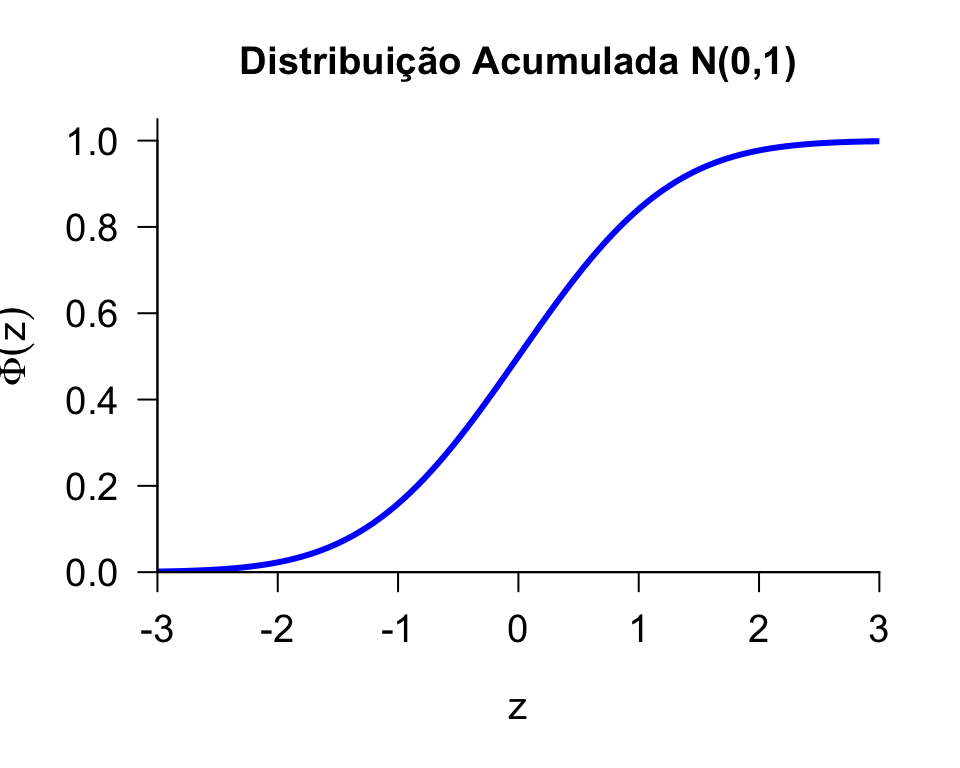
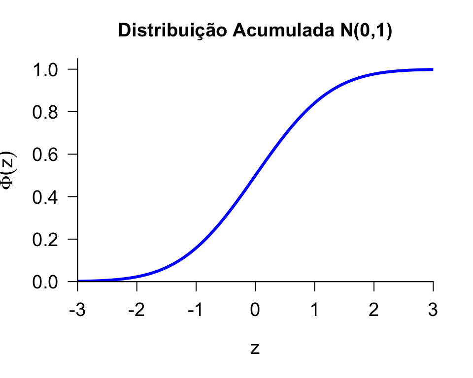

Distribuição Normal
Distribuição Normal
Dizemos que uma v.a. \(X\) possui distribuição normal com parâmetros \(\mu\) e \(\sigma^{2}\), \(\mu \in \mathbb{R}\) e \(\sigma^{2}>0\), se a f.d.p. \(f_{X}\) é dada por:
\[f_{X}(x)=\frac{1}{\sqrt{2\pi\sigma^{2}}}exp\left[-\frac{(x-\mu)^{2}}{2\sigma^{2}}\right], \qquad -\infty < x < \infty\]
Notação: \(X\sim N(\mu,\sigma^{2})\)
Distribuição mais importante da Estatística. Também conhecida como distribuição Gaussiana.
A esperança e variância de uma v.a. \(X\sim N(\mu,\sigma^{2})\) são:
\[\mathbb E(X)=\mu \qquad \mbox{e} \qquad Var(X)=\sigma^2\]
Distribuição Normal - Esperança e Variância
Esperança: \[\mathbb E(X)=\int_{-\infty}^{\infty}x\frac{1}{\sqrt{2\pi\sigma^{2}}}exp\left[-\frac{(x-\mu)^{2}}{2\sigma^{2}}\right]dx=\mu\]
Variância \[ \begin{aligned} Var(X) & = \mathbb E([X-\mathbb E(X)]^{2}) \\ & = \int_{-\infty}^{\infty}(x-\mu)^{2}\frac{1}{\sqrt{2\pi\sigma^{2}}}exp\left[-\frac{(x-\mu)^{2}}{2\sigma^{2}}\right]dx \\ &=\sigma^{2} \end{aligned} \]
Distribuição Normal
Gráfico da função de densidade de probabilidade de uma v.a. \(X \sim N(\mu,\sigma^{2})\)
Função Densidade: "Forma de sino", centrada em \(\mu\) e escala controlada por \(\sigma^2\)
Exemplo: OkCupid
OkCupid é uma rede social para relacionamentos.
Usuários devem colocar características pessoais como, por exemplo, altura.
Será que são sinceros?
Exemplo: OkCupid
Comparação da distribuição das alturas da população adulta norte-americana e a distribuição das alturas dos usuários do site:
Fonte: http://blog.okcupid.com/index.php/the-biggest-lies-in-online-dating/
Exemplo: OkCupid
Comparação da distribuição das alturas da população adulta norte-americana e a distribuição das alturas dos usuários do site:

Fonte: http://blog.okcupid.com/index.php/the-biggest-lies-in-online-dating/
Exemplo: OkCupid
Fonte: http://blog.okcupid.com/index.php/the-biggest-lies-in-online-dating/
Distribuição Normal Padrão
Propriedade: Se \(X \sim N(\mu, \sigma^{2})\), então \[Z=\frac{X-\mu}{\sigma} \sim N(0,1)\]
Dizemos que \(Z\) tem distribuição Normal Padrão e sua densidade se reduz a: \[\phi(z)=\frac{1}{\sqrt{2\pi}}e^{-z^2/2}, \qquad -\infty < z < \infty\]
A f.d.a. de uma Normal padrão, que denotaremos por \(\Phi\), é: \[\Phi(t)=P(Z\leq t)=\int_{-\infty}^{t}\frac{1}{\sqrt{2\pi}}e^{-z^2/2}dz\]
Distribuição Normal Padrão
 

Exemplo: SAT e ACT
Uma universidade americana recebeu inscrição de dois alunos (Pam e Jim) com os respectivos históricos escolares. No entanto, Pam realizou o SAT e tirou 1800, enquanto que o Jim fez o ACT e tirou 24. Como a universidade pode comparar os dois alunos, baseando-se nesses testes?
Precisamos avaliar quão melhor (ou pior) a Pam foi em relação aos demais alunos que realizaram o SAT.
Precisamos avaliar quão melhor (ou pior) o Jim foi em relação aos demais alunos que realizaram o ACT.
Exemplo: SAT e ACT
A universidade tem acesso à média (1500) e ao desvio-padrão (300) das notas de todos os alunos que realizaram o SAT juntamente com a Pam.
A universidade tem acesso à média (21) e ao desvio-padrão (5) das notas de todos os alunos que realizaram o ACT juntamente com a Jim.
Assumindo que as notas dos dois testes seguem uma distribuição normal:
Seja \(X\) uma v.a. representando a nota no SAT: \(X\sim N(\mu=1500,\sigma=300)\).
Seja \(Y\) uma v.a. representando a nota no ACT: \(X\sim N(\mu=21,\sigma=5)\).
Exemplo: SAT e ACT
Exemplo: SAT e ACT
Seja \(X\) uma v.a. representando a nota no SAT: \(X\sim N(\mu=1500,\sigma=300)\).
Padronizando a v.a. das notas do SAT: \(Z_1=\frac{X-1500}{300}\sim N(0,1)\).
Padronizando a nota da Pam:
\(\frac{1800-1500}{300}=1\)
Seja \(Y\) uma v.a. representando a nota no ACT: \(Y \sim N(\mu=21,\sigma=5)\).
Padronizando a v.a. das notas do ACT: \(Z_2=\frac{Y-21}{5}\sim N(0,1)\).
Padronizando a nota do Jim:
\(\frac{24-21}{5}=0.6\)
Exemplo: SAT e ACT
Distribuição Normal
- Para calcular as probabilidades, precisamos usar a f.d.a. de \(Z \sim N(0,1)\)
\[\Phi(t)=P(Z\leq t)=\int_{-\infty}^{t}\frac{1}{\sqrt{2\pi}}e^{-z^2/2}dz,\] que não tem forma fechada, pois \(e^{-z^2}\) não tem antiderivada.
- Contudo, os valores para \(Z \sim N(0,1)\) e \(\phi(z)\) encontram-se tabelados.
- Tudo o que precisamos fazer é transformar a variável em \(N(0,1)\) e usar os valores tabelados. Ou seja, para \(X \sim N(\mu, \sigma^{2})\), temos: \[F_X(a)=P(X \leq a)= P\left(\underbrace{\frac{X-\mu}{\sigma}}_{Z} \leq \frac{a-\mu}{\sigma}\right) = \Phi\left(\frac{a-\mu}{\sigma}\right)\]
Distribuição Normal
Distribuição Normal - Simetria
Distribuição Normal
- \(Z\sim\mbox{Normal}(0,1)\), com f.d.a. \(\Phi\): \[\Phi(t)=P(Z\leq t)=\int_{-\infty}^{t}\frac{1}{\sqrt{2\pi}}e^{-z^2/2}dz\]
- \(\Phi(0)=0.5\)
- \(\Phi(-\infty)=0\)
- \(\Phi(\infty)=1\)
- Por simetria: \[\begin{aligned} \Phi(x) &= P(Z< x)= P(Z> -x) \\ &=1-P(Z<-x)=1-\Phi(-x) \end{aligned}\]
Distribuição Normal
A probabilidade de um intervalo é dada por: \[ \begin{aligned} P(a<Z<b) &= P(Z<b)-P(Z<a) \\ &= P(Z \leq b) - P(Z \leq a) \\ &=\Phi(b)-\Phi(a) \end{aligned} \]
Tabela Normal
Distribuição Normal
Exercitando com a tabela da Normal:
- \(\Phi(0.2)=0.5793\)
- \(\Phi(0.45)=0.6736\)
- \(\Phi(1.28)= 0.8997\)
- \(\Phi(-0.45)= 1-\Phi(0.45) =0.3264\)
Distribuição Normal
Exemplo: Se \(X \sim N(10, 4)\), calcular:
\(P(8<X<10)\)
\(P(9 \leq X \leq 12)\)
\(P(X>10)\)
\(P(X<8 \mbox{ ou } X>11)\)
Fonte: Morettin & Bussab, Estatística Básica \(5^a\) edição, pág 182.
Distribuição Normal
Recorde que se \(X \sim N(\mu, \sigma^2)\), então \(\frac{X-\mu}{\sigma} \sim N(0,1)\).
Neste problema, sabemos que \(\mu = 10\) e \(\sigma^2 = 4\), logo \(\sigma = 2\). Então \[Z=\frac{(X-10)}{2} \sim N(0,1)\]
Devemos transformar \(X\) de modo que o evento \(8<X<10\) permaneça inalterado. Fazemos isso transformando todos os lados da inequação:
\[\begin{aligned} 8<X<10 &\Leftrightarrow 8-10 < X-10 < 10-10 \\ & \Leftrightarrow \frac{8-10}{2} < \frac{X-10}{2} < \frac{10-10}{2} \\ &\Leftrightarrow -1 < Z < 0 \end{aligned} \]
Distribuição Normal
Então, \(P(8<X<10) = P(-1 < Z < 0)\)
O valor \(\varPhi(0)\) está disponível na tabela e é igual a \(0.5\).
Para obtermos \(\varPhi(-1)\), devemos usar a simetria da função \(\varPhi\) em torno do zero: \[\varPhi(-x) = 1-\varPhi(x)\]
A tabela nos dá \(\varPhi(1) = 0.8413 \quad \rightarrow \quad \varPhi(-1) = 1-0.8413 = 0.1587\)
Concluimos portanto que \[ \begin{aligned} P(8<X<10) &= P(-1<Z<0) \\ &= \varPhi(0)-\varPhi(-1) \\ &= 0.5 - 0.1587 = 0.3413 \end{aligned} \]
Distribuição Normal
Esta é a tabela da normal, com os valores de \(\varPhi(1)\) e \(\varPhi(0)\) destacados:

Distribuição Normal
Este é o gráfico da curva \(N(10,4)\), com a região \([8,10]\) correspondente ao item 1. em destaque:
Distribuição Normal
\[ \begin{aligned} P(9 \leq X \leq 12) &= P\left(\frac{9-10}{2} \leq \frac{X-10}{2} \leq \frac{12-10}{2}\right) \\ &= P(-1/2 \leq Z \leq 1) = 0.5328 \end{aligned} \]
\[P(X>10) = P\left(\frac{X-10}{2} > \frac{10-10}{2}\right) = P(Z>0) = 0.5\]
\[ \begin{aligned} P(X<8 \mbox{ ou } X>11) &= P(X<8) + P(X>11) \\ &= P\left(\frac{X-10}{2} < \frac{8-10}{2}\right) + P\left(\frac{X-10}{2} > \frac{11-10}{2}\right) \\ &= P(Z<-1) + P(Z>1/2) \\ &= 0.1586 + 0.3085 = 0.4671 \end{aligned} \]
Distribuição Normal
Exemplo: Se \(X \sim N(4,3^{2})\), calcule \(P(X \leq 7)\) e \(P(1 < X \leq 7)\).
\[\begin{aligned} F_X(7)= P(X \leq 7) &= P\left(\frac{X-4}{3} \leq \frac{7-4}{3}\right) \\ &= P(Z\leq 1)= \Phi(1)=0.8413 \end{aligned}\]
\[ \begin{aligned} P(1 < X \leq 7) &= P\left(\frac{1-4}{3}<\frac{X-4}{3}\leq \frac{7-4}{3}\right) \\ &=P(-1<Z\leq 1) \\ &=\Phi(1)-\Phi(-1) \\ &=\Phi(1)-[1-\Phi(1)] \\ &=2\Phi(1)-1=2\times0.8413-1=0.6826 \end{aligned} \]
Distribuição Normal
Exemplo: \(X \sim N(4,3^{2})\) e a região correspondente a \(P(1 < X \leq 7)\) em destaque no gráfico
Regra Empírica
Em uma distribuição normal \(X \sim N(\mu, \sigma^{2})\), temos o seguinte:
Regra Empírica
Exemplo: Suponha que o \(QI\) da população mundial segue uma distribuição normal com média \(100\) e desvio padrão de \(15\)
Encontre um intervalo que englobe os \(QI\)’s de \(68.3\%\) da população?
E se quisermos \(95\%\)? E \(99.7\%\)?
Regra Empírica
Como \(QI \sim N(100, 15)\), pela regra empírica:
\(68.3\%\) da população: \(85 \leq QI \leq 115\)
\(95\%\) da população: \(70 \leq QI \leq 130\)
\(99.7\%\) da população: \(55 \leq QI \leq 145\)
Aproximação Normal para uma Binomial
Seja \(X \sim Bin(n, p)\)
O que acontece quando o número de ensaios \(n\) aumenta?
Aproximação Normal para uma Binomial
Seja \(X \sim Bin(n, p)\). Se \(n\) é suficientemente grande, a distribuição de \(X\) pode ser aproximada pela distribuição normal, isto é,
\[X \sim N(np, np(1-p))\]
Exemplo: Se \(X \sim Bin(100, 0.7)\), podemos usar a aproximação \(X \sim N(70, 21)\)
Aproximação Normal para uma Binomial
Exemplo: Seja \(X\) o número de vezes que uma moeda honesta resulta em cara quando é lançada \(40\) vezes. Então \[X \sim Bin(40, 0.5)\]
Encontre \(P(X=20)\) usando a fórmula exata e a aproximação normal
- Binomial
\[P(X=20) = {40 \choose 20}(0.5)^{20}(0.5)^{20} = 0.125\]
- Normal
\[P(X=20) \approx P(19.5 < X \leq 20.5) = 0.1256\]
Aproximação Normal para uma Binomial
Exemplo: \(X \sim Bin(40, 0.5)\)
Aproximação Normal para uma Binomial
Em geral, para que a aproximação para a normal seja utilizada:
\[np \geq 10\]
\[n (1-p) \geq 10\]
Ou seja, pelo menos 10 sucessos e pelo menos 10 fracassos na amostra.
Relembrando: Propriedades da Esperança
Para qualquer v.a. \(X\) e constantes \(a\) e \(b\): \[\mathbb E(aX + b) = a \mathbb E(X) + b\]
Casos particulares:- \(\mathbb E(X+b) = \mathbb E(X) + b\)
- \(\mathbb E(aX) = a \mathbb E(X)\)
Se \(X_1, X_2, \ldots, X_n\) são variáveis aleatórias: \[ \mathbb E\left(\sum_{i=1}^n X_i \right) = \sum_{i=1}^n \mathbb E(X_i)\]
Relembrando: Propriedades da Variância
Para qualquer v.a. \(X\) e constantes \(a\) e \(b\): \[Var(aX + b) = a^2Var(X)\]
Casos particulares:- \(Var(X+b) = Var(X)\)
- \(Var(aX) = a^2 Var(X)\)
Se \(X_1, X_2, \ldots, X_n\) são variáveis aleatórias independentes: \[ Var \left(\sum_{i=1}^n X_i \right) = \sum_{i=1}^n Var(X_i)\]
Propriedades da Normal
- Se adicionarmos ou multiplicarmos uma constante a uma v.a. com distribuição Normal, a v.a. resultante continua tendo distribuição normal.
- Ou seja, se \(X\sim N(\mu,\sigma^2)\), então \(aX + b \sim N(a\mu + b, a^2\sigma^2).\)
- Isso explica \[X \sim N(\mu,\sigma^2) \qquad \Longleftrightarrow \qquad Z=\frac{X-\mu}{\sigma}\sim N(0,1).\]
- Se \(X\) e \(Y\) são v.a.'s independentes, tal que \(X \sim N(\mu_x,\sigma_x^2)\) e \(Y\sim N(\mu_y,\sigma_y^2),\) então \[X+Y\sim N(\mu_x+\mu_y,\sigma_x^2+\sigma_y^2)\]
Leituras
Slides produzidos pelos professores:
Samara Kiihl
Tatiana Benaglia
Benilton Carvalho